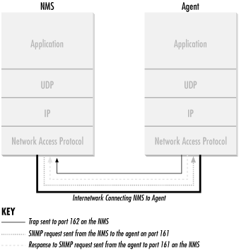

2.1. SNMP and UDP
SNMP uses the
User Datagram Protocol (UDP) as the transport
protocol for passing data between managers and agents. UDP, defined
in RFC 768, was chosen over the
Transmission Control
Protocol (TCP) because it is connectionless; that is, no
end-to-end connection is made between the agent and the NMS when
datagrams (packets) are sent back and forth.
This aspect of UDP makes it unreliable, since there is no
acknowledgment of lost datagrams at the protocol level. It's up
to the SNMP application to determine if datagrams are lost and
retransmit them if it so desires. This is typically accomplished with
a simple timeout. The NMS sends a UDP request to an agent and waits
for a response. The length of time the NMS waits depends on how
it's configured. If the timeout is reached and the NMS has not
heard back from the agent, it assumes the packet was lost and
retransmits the request. The number of times the NMS retransmits
packets is also configurable.
At least as far as regular information
requests are concerned, the unreliable nature of UDP isn't a
real problem. At worst, the management station issues a request and
never receives a response. For traps, the situation is somewhat
different. If an agent sends a trap and the trap never arrives, the
NMS has no way of knowing that it was ever sent. The agent
doesn't even know that it needs to resend the trap, because the
NMS is not required to send a response back to the agent
acknowledging receipt of the trap.
The
upside to the unreliable nature of UDP is that it requires low
overhead, so the impact on your network's performance is
reduced. SNMP has been implemented over TCP, but this is more for
special-case situations in which someone is developing an agent for a
proprietary piece of equipment. In a heavily congested and managed
network, SNMP over TCP is a bad idea. It's also worth realizing
that TCP isn't magic, and that SNMP is designed for working
with networks that are in trouble -- if your network never failed,
you wouldn't need to monitor it. When a network is failing, a
protocol that tries to get the data through but gives up if it
can't is almost certainly a better design choice than a
protocol that will flood the network with retransmissions in its
attempt to achieve reliability.
SNMP
uses the UDP port 161 for sending and receiving requests, and port
162 for receiving traps from managed devices. Every device that
implements SNMP must use these port numbers as the defaults, but some
vendors allow you to change the default ports in the agent's
configuration. If these defaults are changed, the NMS must be made
aware of the changes so it can query the device on the correct ports.
Figure 2-1 shows the TCP/IP protocol suite, which is
the basis for all TCP/IP communication. Today, any device that wishes
to communicate on the Internet (e.g., Windows NT systems, Unix
servers, Cisco routers, etc.) must use this protocol suite. This
model is often referred to as a protocol stack, since each layer uses
the information from the layer directly below it and provides a
service to the layer directly above it.

Figure 2-1. TCP/IP communication model and SNMP
When
either an NMS or an agent wishes to perform an SNMP function (e.g., a
request or trap), the following events occur in the protocol stack:
- Application
-
First, the actual SNMP application (NMS
or agent) decides what it's going to do. For example, it can
send an SNMP request to an agent, send a response to an SNMP request
(this would be sent from the agent), or send a trap to an NMS. The
application layer provides services to an end user, such as an
operator requesting status information for a port on an Ethernet
switch.
- UDP
-
The next layer, UDP, allows two hosts to
communicate with one another. The UDP header contains, among other
things, the destination port of the device to which it's
sending the request or trap. The destination port will either be 161
(query) or 162 (trap).
- IP
-
The IP layer tries to deliver the SNMP packet to its intended
destination, as specified by its IP address.
- Medium Access Control (MAC)
-
The final event that must occur for an
SNMP packet to reach its destination is for it to be handed off to
the physical network, where it can be routed to its final
destination. The MAC layer is comprised of the actual hardware and
device drivers that put your data onto a physical piece of wire, such
as an Ethernet card. The MAC layer also is responsible for receiving
packets from the physical network and sending them back up the
protocol stack so they can be processed by the application layer
(SNMP, in this case).
This interaction between SNMP applications and the network is not
unlike that between two pen pals. Both have messages that need to be
sent back and forth to one another. Let's say you decide to
write your pen pal a letter asking if she would like to visit you
over the summer. By deciding to send the invitation, you've
acted as the SNMP application. Filling out the envelope with your pen
pal's address is equivalent to the function of the UDP layer,
which records the packet's destination port in the UDP header;
in this case it's your pen pal's address. Placing a stamp
on the envelope and putting it in the mailbox for the mailman to pick
up is equivalent to the IP layer's function. The final act
occurs when the mailman comes to your house and picks up the letter.
From here the letter will be routed to its final destination, your
pen pal's mailbox. The MAC layer of a computer network is
equivalent to the mail trucks and airplanes that carry your letter on
its way. When your pen pal receives the letter, she will go through
the same process to send you a reply.